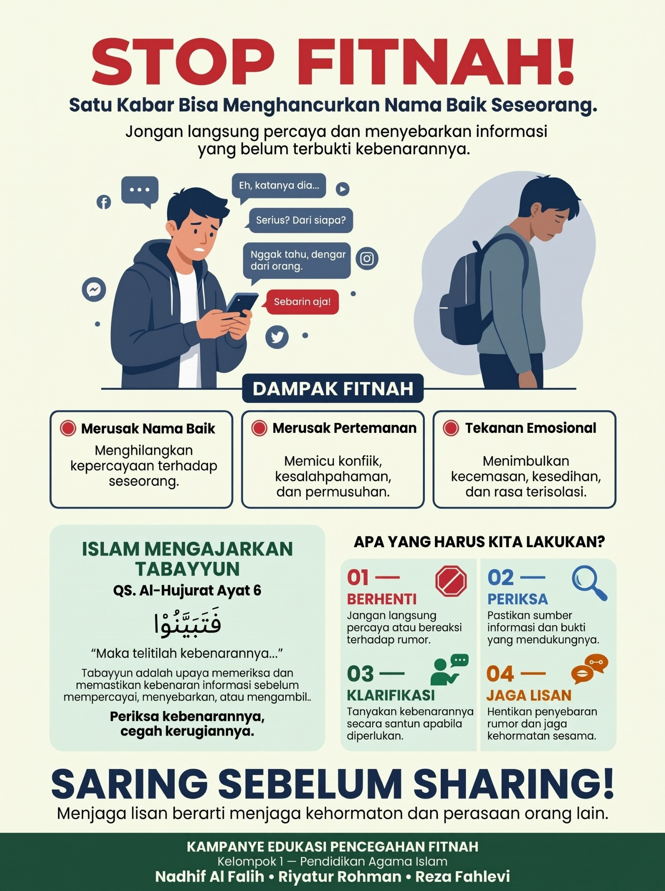
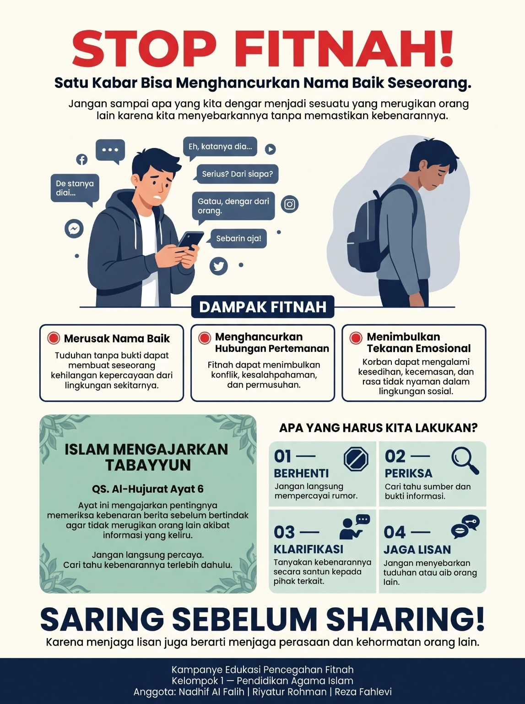

Merusak Nama Baik
Tuduhan tanpa bukti dapat menghilangkan kepercayaan lingkungan terhadap seseorang dan merusak reputasi yang telah dibangun.
HCDT PROJECT — KELOMPOK 1
Satu informasi yang belum terbukti kebenarannya dapat merusak nama baik seseorang. Mari membangun lingkungan mahasiswa yang lebih bijak dalam menerima dan menyebarkan informasi.
Mulai Belajar Tentang Proyek
Dalam konteks kampanye ini, fitnah merupakan tuduhan atau informasi palsu yang dapat merugikan kehormatan dan nama baik seseorang. Di lingkungan mahasiswa, penyebarannya dapat terjadi melalui percakapan, grup chat, maupun media sosial.
Tuduhan tanpa bukti dapat menghilangkan kepercayaan lingkungan terhadap seseorang dan merusak reputasi yang telah dibangun.
Fitnah dapat memicu kesalahpahaman, konflik, hilangnya rasa saling percaya, dan permusuhan antarmahasiswa.
Korban fitnah dapat mengalami kecemasan, kesedihan, dan rasa tidak nyaman dalam lingkungan sosialnya.
Mulai dari empat langkah sederhana sebelum menerima atau menyebarkan informasi.
Jangan langsung percaya atau bereaksi terhadap rumor.
Pastikan sumber informasi dan bukti yang mendukungnya.
Tanyakan kebenarannya secara santun apabila diperlukan.
Hentikan penyebaran rumor dan jaga kehormatan sesama.
Tabayyun adalah upaya memeriksa dan memastikan kebenaran informasi sebelum mempercayai, menyebarkan, atau mengambil tindakan.
Islam mengajarkan kita untuk menjaga lisan, menghindari tuduhan tanpa bukti, dan menjaga kehormatan sesama manusia.
Praktikkan Tabayyun →Periksalah kebenaran suatu berita.
Ayat ini mengingatkan pentingnya memeriksa kebenaran berita agar kita tidak merugikan orang lain akibat informasi yang keliru.
Ringkasan makna QS. Al-Hujurat: 6Terapkan prinsip tabayyun sebelum menerima dan menyebarkan informasi.
Periksa empat hal berikut sebelum menyebarkan informasi.
0 dari 4 pemeriksaan selesai.
Pertanyaan 1 dari 5
Proyek edukasi pencegahan fitnah di lingkungan mahasiswa menggunakan pendekatan Human Centered Design Thinking.
Mahasiswa yang mengikuti wawancara.
Data dari lima pertanyaan terbuka.
Responden yang mengusulkan perbaikan.
Poster awal dan poster hasil revisi.
Mengidentifikasi permasalahan penyebaran rumor dan tuduhan tanpa bukti di lingkungan mahasiswa.
Merumuskan kebutuhan mahasiswa terhadap edukasi mengenai bahaya fitnah dan pentingnya memeriksa kebenaran informasi.
Menentukan kampanye melalui poster edukasi sebagai solusi pencegahan fitnah di lingkungan mahasiswa.
Membuat poster Stop Fitnah yang memuat dampak fitnah, prinsip tabayyun, dan langkah pencegahan.
Melaksanakan penempelan dan sosialisasi poster serta wawancara terhadap sembilan mahasiswa pada 21 November 2026.
Menyempurnakan poster berdasarkan masukan responden dan mengembangkan website edukasi sebagai inisiatif lanjutan kelompok.
Ringkasan analisis jawaban sembilan responden setelah membaca poster edukasi.
Penyempurnaan produk berdasarkan masukan pengguna setelah tahap uji coba.
Memperbesar tulisan pada bagian tabayyun.
Menambahkan potongan ayat atau terjemahannya.
Memperjelas kontras pada bagian tabayyun.
Memperbesar tulisan pada bagian bawah poster.
Memberikan variasi warna pada ikon pencegahan.
Perkembangan poster sebelum dan sesudah memperoleh masukan dari pengguna.

Poster yang digunakan dalam tahap uji coba.
Poster yang disempurnakan berdasarkan feedback pengguna.
Pendidikan Agama Islam
Human Centered Design Thinking Project
Kampanye edukasi untuk membangun lingkungan mahasiswa yang lebih bijak dalam menerima dan menyebarkan informasi.
01 — Al-Qur'an, Surah Al-Hujurat ayat 6.
02 — Dokumen Empathize, Define, Ideate, dan Prototype Kelompok 1.
03 — Hasil wawancara anonim sembilan mahasiswa, 21 November 2026.
Al-Qur'an Kementerian Agama RI →